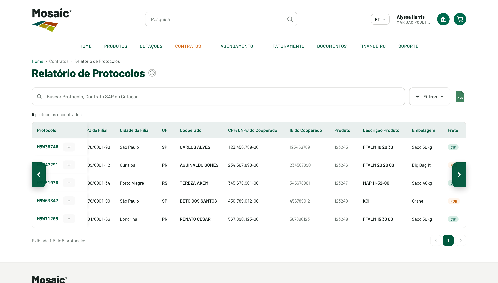

Mosaic Direct 2.0 · Scheduling Fase 2 · Decisão de UX
Scroll horizontal em tabelas largas
Como dar acesso às colunas que não cabem na tela — Relatório de Protocolos (24 colunas) e Criar Protocolo (14 colunas) — comparando as 3 opções e a decisão final.
As tabelas têm mais colunas do que cabe na largura da tela. Em tabelas largas, o usuário muitas vezes nem percebe que há conteúdo à direita — então o objetivo nº 1 é deixar óbvio que existem mais colunas e dar um controle fácil e acessível para alcançá-las, funcionando igual no portal, na tela interna do CS e no mobile.
Restrição técnica
São LWCs no Experience Cloud
As telas são componentes (LWC) rodando dentro do site (LWR) e também na tela interna do CS (Lightning Experience). A solução precisa viver dentro do componente, sem depender do layout da página.
Duas decisões separadas
Layout × mecanismo
(A) Layout: tabela contida em altura fixa (cabeçalho fixo) vs. página rolando. (B) Mecanismo horizontal: botões, barra custom ou scroll nativo.
As alternativas
Opção 1, 2 e 3
Cada opção tem demonstração navegável nas duas telas. As classificações de risco refletem a análise do time de engenharia.
1
Estilo Jira (tela travada)
Risco alto · não recomendada
A página inteira não rola; só a tabela rola por dentro. Visual "uma tela só" com cabeçalho fixo.
A Opção 3 vence em descoberta, acessibilidade, consistência e risco. Perde só em precisão de arrasto — ponto pequeno e mitigável (coluna congelada + rolagem nativa preservada por baixo).
Análise técnica · Engenharia
Parecer da engenharia, opção a opção
Resumo da avaliação do time de engenharia, considerando que as telas são LWCs rodando dentro do Experience Cloud — não páginas HTML isoladas.
1
Estilo Jira (tela travada)Maior risco · não recomendada
Para travar a tela, o componente precisaria controlar o scroll e o layout da página inteira — algo do Theme Layout do site, não do LWC.
Mexer em document/body sob Lightning Web Security é desaconselhado pela Salesforce: acopla ao markup do tema e tende a quebrar a cada atualização do template.
O mesmo componente roda no CS (Lightning Experience), onde travar o documento atrapalha a navegação, e a solução degrada no mobile.
2
Barra custom sempre visívelViável · risco médio
Também é contida no componente e factível.
O custo é o acerto fino: a barra custom não substitui a rolagem nativa (acessibilidade de teclado/leitor de tela), a estilização de scrollbar tem inconsistência entre navegadores, e precisa de QA para acompanhar resize e o “Carregar mais”.
Dá pra fazer, mas custa mais que a Opção 3 para ficar redonda.
3
Botões de bloco ‹ ›Recomendada · baixo risco
Totalmente interna ao componente: cada clique apenas ajusta o scrollLeft do contêiner da tabela.
São botões reais, acessíveis por teclado e leitor de tela, e funcionam igual em desktop, mobile e na tela interna do CS.
Não dependem de nada fora do componente, sem risco de efeito colateral. Entra em produção sem surpresa.
AB
“O visual que você buscou na Opção 1 — cabeçalho fixo, uma só barra, sem scroll vertical sobrando — é alcançável de forma nativa, confinando a tabela a um contêiner de altura fixa com scroll próprio dentro do componente, sem tocar no chrome da página.”
— Parecer da engenharia (alinhamento técnico · Scheduling Fase 2)
Decisão final

O melhor das duas: look da Op. 1 + mecanismo da Op. 3
Visual contido + botões de bloco
Em vez de travar a página (Opção 1, arriscada), entregamos o mesmo visual de forma nativa: a tabela é confinada a uma área de altura fixa com cabeçalho fixo, e o scroll horizontal usa os botões de bloco ‹ › (Opção 3). Tudo dentro do componente.
Cabeçalho fixo + área contida (o look "uma tela só").
1ª coluna congelada (Protocolo) — nunca perde a referência da linha.
Botões ‹ › acessíveis; rolagem nativa (trackpad/teclado) ativa por baixo.
Baixo risco e igual em portal, CS e mobile.
Onde se aplica
Telas que usam este padrão
Das telas já construídas, estas têm tabelas largas e adotam o padrão decidido (área contida + cabeçalho fixo + coluna(s) congelada(s) + botões ‹ ›). Já estão aplicadas e navegáveis:
Contratos · 24 colunas
Relatório de Protocolos
Acompanhamento de protocolos por status, quantidades e saldos. 1ª coluna (Protocolo) congelada.
Telas que NÃO precisam deste padrão: Agendar Contrato Normal e Agendar Protocolo — a seleção de itens acontece em modal centralizado e a tabela principal cabe na largura da tela, sem scroll horizontal.
Em todas as opções a barra duplicada foi eliminada — nunca há duas barras horizontais ao mesmo tempo. E o banner informativo virou um ícone ⓘ no título, para não ocupar espaço vertical acima da tabela.